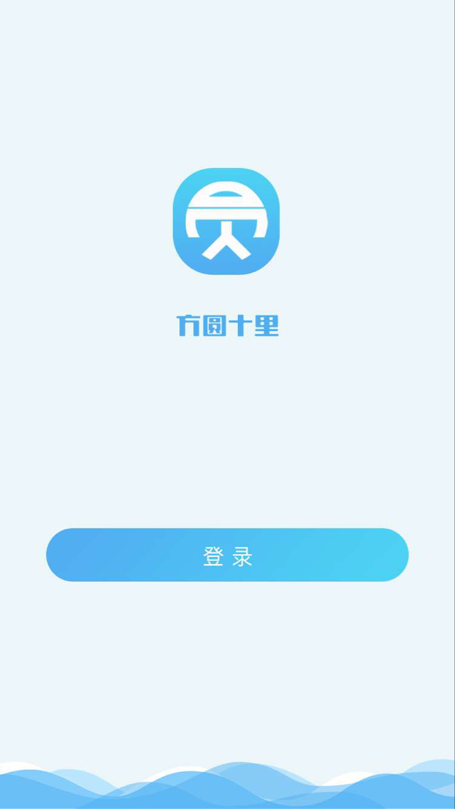

<!DOCTYPE html>
<html>

	<head>
		<meta charset="utf-8">
		<title>Hello MUI</title>
		<meta name="viewport" content="width=device-width, initial-scale=1,maximum-scale=1,user-scalable=no">
		<meta name="apple-mobile-web-app-capable" content="yes">
		<meta name="apple-mobile-web-app-status-bar-style" content="black">

		<!--标准mui.css-->
		<link rel="stylesheet" href="css/mui.min.css">
		<style>
			#slider{
				position: fixed;
				width: 100%;
				height: 100vh;
			}
			/*#slider div{
				width: 100%;
				height: 100%;
			}*/
			/*.mui-slider-group{
				width: 100%;
				height: 100%;
			}*/
			#slider img{
				height: 100vh;
			}
			
		</style>
		<!--App自定义的css-->
		<!--<link rel="stylesheet" type="text/css" href="../css/app.css"/>-->
	</head>

	<body>
		<!--<div class="mui-content">
			<ul class="mui-table-view mui-table-view-chevron">
				<li id="switch" class="mui-table-view-cell">
					定时轮播
					<div class="mui-switch">
						<div class="mui-switch-handle"></div>
					</div>
				</li>
			</ul>
		</div>-->
		<div id="slider" class="mui-slider" >
			<div class="mui-slider-group">
				<!-- 额外增加的一个节点(循环轮播：第一个节点是最后一张轮播) -->
				<!--<div class="mui-slider-item mui-slider-item-duplicate">
					<a href="#">
						
					</a>
				</div>-->
				<!-- 第一张 -->
				<!--<div class="mui-slider-item">
					<a href="#">
						
					</a>  
				</div>-->
				<!-- 第二张 -->
				<!--<div class="mui-slider-item">
					<a href="#">
						
					</a>
				</div>-->
				<!-- 第三张 -->
				<!--<div class="mui-slider-item">
					<a href="#">
						
					</a>
				</div>-->
				<!-- 第四张 -->
				<!--<div class="mui-slider-item">
					<a href="#">
						
					</a>
				</div>
				 额外增加的一个节点(循环轮播：最后一个节点是第一张轮播) 
				<div class="mui-slider-item mui-slider-item-duplicate">
					<a href="#">
						
					</a>
				</div>-->
			</div>
			<!--<div class="mui-slider-indicator">-->
				<!--<div class="mui-indicator mui-active"></div>
				<div class="mui-indicator"></div>
				<div class="mui-indicator"></div>-->
				<!--<div class="mui-indicator"></div>-->
			<!--</div>-->
		</div>
		<script src="js/mui.min.js"></script>
		<script src="js/castapp.js"></script>
		<script src="js/jquery-2.1.0.js"></script>
		<script src="js/xinwen.js"></script>
		<script type="text/javascript" charset="utf-8">
			var length,time,self;
			console.log('启动广告页面');
			mui.init({
//				swipeBack:true //启用右滑关闭功能
			});
			
			var slider = mui("#slider");
			mui.plusReady(function(){
				self = plus.webview.currentWebview();  //获得自己
				getAppQdGg();
			})
			
			function getAppQdGg(){
				$.ajax({
					type : 'get',
					url  : xinwen.url+'/getAppQdGg',
					datatype : 'json',
					success : function(res){
//						console.log('---'+JSON.stringify(res));
						if(res.code == 1){
							length = res.data['res'].length;
							time = res.data['time'] * 1000;
							if(time < 1){time = 1}
							
//							for(var k in res.data['res']){
//								var str = viewobj_.img(res.data['res'][k]);
//								$('.mui-slider-group').append(str);
//								$('.mui-slider-indicator').append(viewobj_.div);
//							}
							var str = viewobj_.img(res.data['res']);
							$('.mui-slider-group').append(str);
//							$('.mui-slider-indicator').append(viewobj_.div);
							//启动轮播
//							startlunbo();
							setTimeout(function(){
								tongzhi();
							},time);
							
						}else{
							tongzhi();
//							alert()
						}
					},
					error : function(res){
						tongzhi();
					}
				});
			}	
			
			var viewobj_ = {
				img : function(res){
					var a = res.url == '' ? '#' : res.url;
					var str = $('<div class="mui-slider-item">'+
							'<a href="'+a+'">'+
								''+
							'</a>'+
						'</div>'); 
					return str;
				},
				div:function(){
					var str = $('<div class="mui-indicator"></div>');
					return str;
				}
			}
			function startlunbo(){
				slider.slider({
					interval: time
				});
				document.querySelector('#slider').addEventListener('slide', function(event) {
//					console.log(event.detail.slideNumber);
					if(event.detail.slideNumber >= length-1){
						setTimeout(function(){
							tongzhi();
						},time);
						$('body').on('swipeleft',function(){
							tongzhi();
						});
					}
				}); 
			}
			
			function opennav(){
				mui.openWindow({
					url:'nav-tab.html',
					id:'nav-tab.html',
//					show:{
////						autoShow:false,
//					},
				})
				plus.nativeUI.closeWaiting(); //关闭等待框
			}
			function tongzhi(){
				self.close();
//				opennav();
				//先通知
//				var target = plus.webview.getWebviewById('nav-tab.html')//mui的底部导航的界面id 就是url	
//				mui.fire(target, 'xianshi', {});	
			}
		</script>
	</body>

</html>